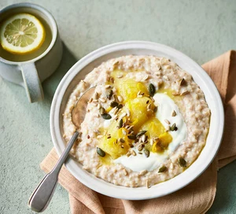

Cinnamon Porridge

Description
Have porridge each morning? Why not spruce it up a bit. This porridge recipe
will have you kjflsfjsdl.
Ingredients
- Porridge Oats
- Semi-skimmed Milk
- Banana
- yoghurt
Steps
- Put oats, milk and cinnamon in pan, then bring to boil then put on low heat
and stir.
- Put banana in microwave until soft. Pour porridge into bowl with banana.
Dish is served. Bon apetit!